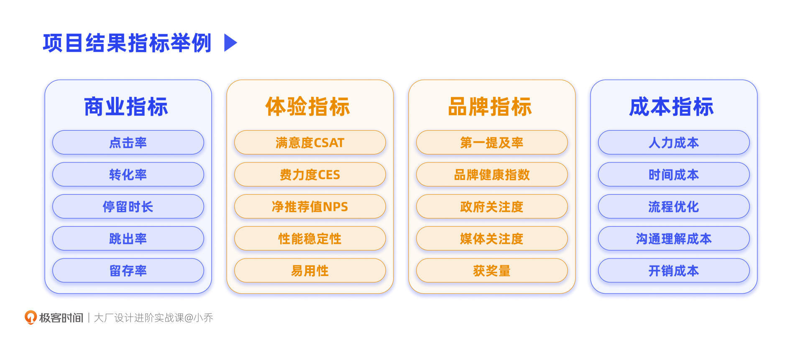
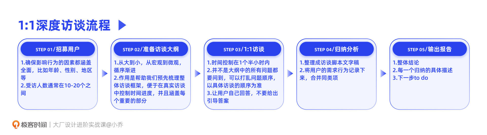
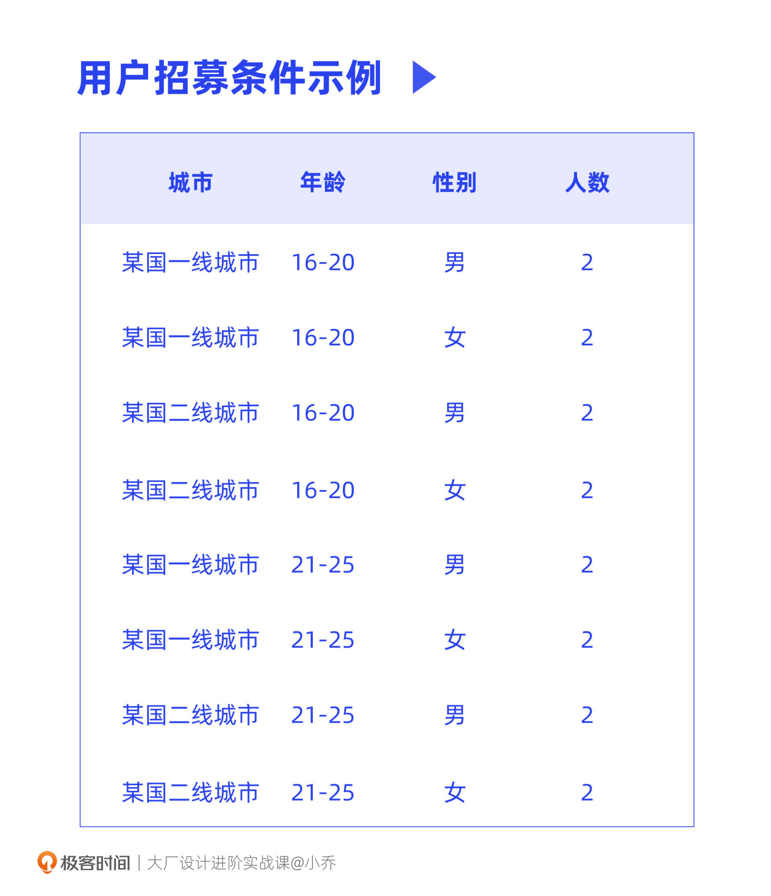
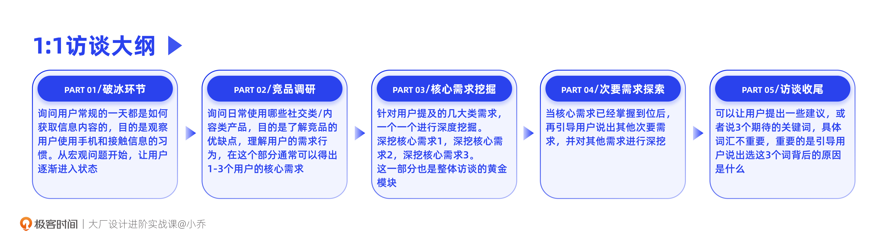
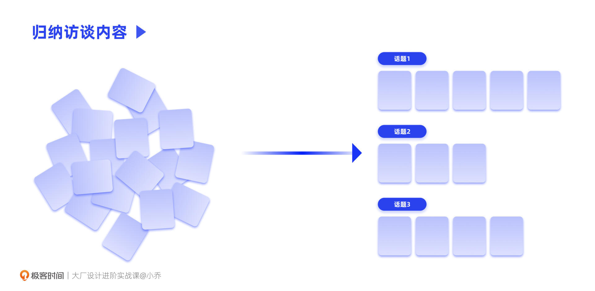
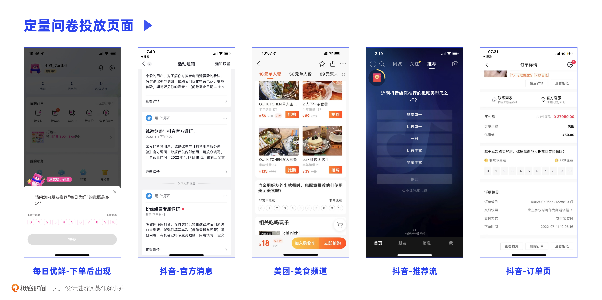

- 00 开篇词 升维思考，是设计师有效成长的第一步.md.html
- 01 业务周期：0-1-10-100-N的发展策略.md.html
- 02 商战模式：如何在商业竞争下突出重围？.md.html
- 03 市场洞察：如何找寻差异化撬动支点？.md.html
- 04 用户洞察：不懂用研的设计师不是好职场人.md.html
- 05 用户画像：是形式主义还是真的有效？.md.html
- 06 用户旅程：挖掘不同用户的核心机会点.md.html
- 07 职场晋升：看懂晋升的“游戏规则”.md.html
- 08 设计价值升级：五层进阶突破成长.md.html
- 09 基础价值 核心三原力：如何将需求转化为设计稿？.md.html
- 10 基础价值 第一性原理：从问题本质解决问题.md.html
- 11 基础价值 设计复盘：只是量化设计结果吗？.md.html
- 12 二级价值 负向网兜：如何全面发现负向问题？.md.html
- 13 二级价值 设计自驱：如何做好项目Owner？.md.html
- 14 二级价值 自驱合作：如何反内卷处理合作关系？.md.html
- 15 三级价值 增长误区：思维惯性陷阱和虚荣数据.md.html
- 16 三级价值 用户增长历程：AARRR是万能的吗？.md.html
- 17 三级价值 产品增长：如何做好产品创新？.md.html
- 18 三级价值 运营增长：如何自驱营销活动和投放？.md.html
- 19 三级价值 品牌增长 抢占心智，赢得人心红利.md.html
- 20 三级价值 增长实操：如何“步步为营”推动落地？.md.html
- 21 四级价值 L型赋能：让T型人才发挥更大价值.md.html
- 22 四级价值 “网状对比”解决共性痛点.md.html
- 23 五级价值 商业画布：设计师可以担任业务方吗？.md.html
- 24 五级价值 共创洞察：如何做好一次完善的workshop？.md.html
- 25 五级价值 领导力觉醒：写给新晋管理者.md.html
- 26 工作选择（上）：2B or 2C设计师？如何规划领域？.md.html
- 27 工作选择（下）：大厂 or 小厂？如何选择赛道？.md.html
- 28 人才地图：认知自我，成为高潜力人才.md.html
- 29 成长历程：如何从设计小白成长为团队负责人？.md.html
- 30 冰山模型：如何成为让面试官欣赏的“面霸”？.md.html
- 31 作品集指导：什么是面试官喜欢的作品集？.md.html
- 用户故事 什么是职场设计师进阶的正确姿势？.md.html
- 结束语 突破自我，成人达己.md.html
- 捐赠
04 用户洞察：不懂用研的设计师不是好职场人
你好，我是小乔。
前面的三节课，我们完成了商业市场面的认知学习，也学到了市场调研的方法，在接下来的三节课中，我们将一起探讨用户面的调研。
虽然设计师对“用研”这个词再熟悉不过，但依然有很多同学对用研有质疑，比如：
- 用户研究员产出的研究报告，对我做设计好像没什么用；
- 只有2B需要用研吧，2C已经有上线数据了，还需要用研做什么？
用研看似是个花费时间的事情，但它对于业务方向的判断和结果验收都有着不可磨灭的作用，能够显著提升业务发展效率。
对于我们设计师来说，把握住用户洞察，也就掌握了话语权。这节课的目的并不是让设计师成为一个优秀的用研，而是要把用研能力作为我们的装备，从而创造更大的设计价值，获得成长与回报。
为什么用户研究很重要？
想要理解用研的重要性，我们可以从两个方面来讨论。一方面是对于不同的业务，用研到底有着什么作用；另一方面，就是它对于我们设计师来说有着怎样的帮助。
对不同业务的重要性
相信2B产品需要用研是我们的共识，因为C端是用户主动选择使用这个产品，数据可以直观地体现使用问题；而2B产品往往是企业选择好产品后，员工被动使用，所以即使再难用，也很难从使用数据上看出机会点。
那为什么2C产品也需要用研呢？我们可以将用研这件事分为3个阶段来看：在不确定方向时挖掘需求、在设计过程中指导方案、在产出上线后回收结果。
我们可以想一想，如果没有用研，仅通过线上数据来假设原因，再上线不同方案反复测试，那试错成本是不是就太大了？要知道即便是在大厂，也无法什么功能都做AB测试，因为没有那么多资源进行开发，而用研可以帮助我们锁定问题，在小范围内找准优化方案。
并且在很多时候，业务是没有足够的数据供我们参考的。比如做适老化设计、做国际化项目、制定品牌调性等，如果不经历调研，很难“拿捏”用户需求和偏好。为了让业务有效开展，就需要做用户调研。
在我们验收项目结果时，也需要用研，因为并不是所有工作都可以通过商业指标衡量的，比如体验指标、品牌指标，这些都只能通过调研来量化结果。

对设计师的重要性
业务需要用研，那为什么设计师也要精通用研呢？对我们来说，主要有3个原因。
原因1：提升认知，找对设计解法
在认知方面，我想和你分享我在留学时，系主任说过的一段话：“找出用户需求并得出设计方案，是一个走迷宫的过程，这条路不通，就要换一条路，直到找出正确的路径，才能找到真正的终点。而有的学生，会自己假想一个终点，自认为那里就是正确答案，即便没有任何合理的路径通向那里，也要拼命撞墙走到那个假想的终点。”
虽然这段回忆已经距离现在将近十年，但一直让我备受启发。这个描述，像极了接到需求就直接想界面方案的设计师，却没有回到项目目标和用户需求本身去思考合理性。而用研，正是找出合理路径，达到真正终点的前提。
原因2：资源不足，自己上
也许你会说，我不在大厂，没有用研的资源，所以我只能机械地承接产品需求。但其实，不管是在大厂还是小厂，不管是核心业务还是边缘业务，用研资源往往都是不足的。
与其抱怨我们提的用研需求无法和高管们提的需求PK优先级，不如让我们自己精通用研方法，为自己的设计价值负责。
何况，每个职能都有能力高低之分，设计师有逻辑清晰、主动自驱高价值项目的同学，也有不了解业务情况、沦为美工的同学；用户研究员也是同理，如果对你来说很重要的用研需求，最后被安排给能力不足的同学来执行，其实不一定比你自己做的更科学。
原因3：掌握机会点，才能掌握话语权
许多设计师都会抱怨设计这个职能没有话语权，其实我们放眼望去，哪个职能不都有话语权高的资深玩家，和话语权低的小透明吗？如果我们成为掌握重要资源、把控机会点的人才，就能创造更大价值，话语权也就更高。
以我自己为例，除了带领设计团队以外，我也负责带领业务和战略的用研，汇报对象是业务负责人和高管。各公司和部门的设计总监，往往都希望用研能归属于自己的管辖范畴，因为将用户洞察捏在自己手里，这样更容易主导机会点，从被动承接需求转为主动提出需求。
设计师需要掌握哪些用研方法？
了解了用研的重要性后，相信你也想通过用研解决问题、获得话语权。接下来，我们就来聊聊具体的用研方法。通常用户研究分为定性和定量两大类，这两者需要相辅相成，配合使用。
定性与定量调研的区别
我们先来看定性调研。定性调研更注重对需求的挖掘，而不局限在现有答案中。具体的方式有：一对一用户访谈、焦点小组、用户画像分析、影随观察、专家访谈、关键词/图片描述法等等。
在访谈过程中，用户往往并不知道自己的需求是什么，或者难以表述清楚，这就需要访谈者多问开放式问题，循循善诱，引导用户说出问题的本质。
正如福特汽车的创始人亨利·福特说过：“如果我问用户他们想要什么，用户会说他们想要一匹更快的马。”而用户真正的需求在于，他们想要更快的出行方式。对访谈者来说，就需要挖掘最底层的用户需求，而不是以中间答案作为结论。
那么定量调研又是什么呢？定量调研通常是在我们已经有了一定的信息输入后，将相关变量都罗列在选项中，通过问卷的方式向用户确认答案或比例。
问卷中的问题设置通常为半封闭式问题，将我们已知的变量作为选项，也会融入一些半开放式问题，比如有个选项叫作“其他”，便于用户补充，避免有些变量超出我们的已知范围。
我们在做用研时，方法并不是随便选择的，要看我们的调研目的是什么，通过哪种方式可以更加准确、高效地获得想要的信息。
丰富的用研方法是无法在一节课中就全部讲完的，这节课，我们先将重点放在最常用的1:1定性访谈和定量问卷上，来看看选择这两个方法的原因和实操中的具体注意事项。
定性：如何做好1:1深度访谈？
假设我们通过上节课的市场调研分析后，得出一个业务机会：在某个国家做一款短视频软件，目标为16-25岁的年轻用户。那产品需要具备哪些功能，呈现怎样的内容呢？下面，就要通过用户访谈，确认用户刷短视频的行为需求。
1:1深度访谈，大致要经历以下5个阶段：

首先，招募用户。在招募用户时，需要确保影响行为的因素都涵盖全面，比如年龄、性别、地区等。招募用户的全面性，是本次调研准确性的前提。如果招募样本有偏差，后续的工作都将不成立。
我们的受访人数通常在10-20个之间，因为人数太少可能没有包含全部情况，人数过多会导致内容饱和重复，浪费人力和访谈报酬。以下图为例，招募标准覆盖一、二线城市、不同年龄、不同性别，总计16个用户。

为什么年龄要区分为16-20岁和21-25岁两段呢？因为初步判断不同年龄层的用户需求也许会有差异，有的还是在校学生，有的已经初入职场。因此我们猜测会对用户行为需求产生影响的条件，尽量都能在用户招募中体现。
在招募用户的同时，我们可以开始第2步，准备访谈大纲。
访谈大纲建议从大到小，从宏观到微观，循序渐进，深挖用户需求。比如要深挖短视频需求，大纲里需要包含哪些内容呢？

- 破冰环节：可以询问用户常规的一天都是如何获取信息内容的，目的是观察用户使用手机和接触信息的习惯。从宏观问题开始，让用户逐渐进入状态；
- 竞品调研：询问日常使用哪些社交类/内容类产品，目的是了解竞品的优缺点，理解用户的需求行为，在这个部分通常可以得出1-3个用户的核心需求；
- 核心需求深挖：针对用户提及的几大类需求，一个一个进行深度挖掘。比如用户提到想看内容打发时间，就继续深挖用户具体喜欢什么类型的内容。这一部分也是整体访谈的黄金模块；
- 次要需求探索：当核心需求已经掌握到位后，再引导用户说出其他次要需求，并对其他需求进行深挖；
- 访谈收尾：最后，可以让用户提出一些建议，或者说3个期待的关键词，具体词汇不重要，重要的是引导用户说出选这3个词背后的原因是什么。
针对这个架构，可以将想到的问题全部罗列出来，从重要到不重要排序。访谈大纲的作用是帮助我们预先梳理整体访谈框架，便于在真实访谈中把控时间进度，并且涵盖每个模块。通常访谈的时间控制在1个半小时内，避免用户失去耐心。
接下来就是第3步，也是最关键的一步，与用户进行1:1访谈。
在访谈开始之前，要向受访者强调本次访谈的奖金和时间长度，让用户有预期。在真实访谈中，并不是大纲中的所有问题都要问到，可以打乱问题顺序，以具体访谈的顺序为准。提问时让用户自己回答，不要给出引导答案。如果在访谈过程中发现大纲中未覆盖的部分，可以补充在大纲中，便于在之后的访谈中覆盖。访谈全程需要录音，便于后续整理成访谈脚本文字稿。

全部访谈结束后，就到了第4步，分析归纳。
将用户的需求行为记录下来，合并同类项，就可以得到不同方面的需求。比如，在短视频内容方面，不同用户分别提到了：想看教育学习类的内容，想看娱乐轻松的内容，想看身边朋友们发布的内容。当我们之后想进一步确定哪个需求最受用户欢迎时，就可以做定量问卷，而这三个需求就是问题中的三个选项。
最后一步，就是产出访谈报告。推荐报告的结构为：整体结论、每一个归纳话题的具体描述、下一步to do。将整体结论前置，有利于听众高效吸收自己最想知道的部分。
1:1访谈不仅可以帮助我们收拢业务方向、规划产品功能，还可以推导用户画像，并针对每个用户画像梳理旅程地图，具体方法将在我们后面的两节课讲解。
定量：如何做好定量问卷？
在了解了深度访谈的方法后，定量调研又该如何进行呢？也同样是5个阶段：样本抽样-设计问卷-投放问卷-降噪处理-输出报告。
样本抽样与定性调研的逻辑相似，都需要全面、公平地覆盖不同条件。那需要收集多少样本量呢？网上有许多计算公式，简单来说，一般我们要求最小分析单位的用户量达到300以上。比如，我们要拆分男女用户的答案，就要求男性和女性用户都有300人以上的样本，或者我们要拆分去看不同年龄段用户的答案，那就每个年龄段都需要达到300人以上。
那问卷里要设置多少个问题呢？其实，当题量超过10个，用户就会产生答题压力，但是我们在调研中也希望尽量收集更全面的信息，所以一般控制在20题以内。
每道题里面的选项个数，要看选项的复杂程度。比如，让用户选出最喜欢的LOGO，对这种选项做判断的费力度不高，那选项不超过10个就可以；但如果问题是选择slogan，每个都是长句子，并且不是用户熟悉的内容，那最好要控制在5个选项之内。
投放问卷的渠道，可以是官方消息号、内容流、商品卡片、直播页面，或任何符合询问场景的界面。

不同于我们全程重度参与的定性调研，定量调研要避免“噪音”反馈，尤其是一些有奖填写的问卷。我们在投放定量问卷后，由于用户的答题过程不受“监督”，有一定比例的用户会为了快速填完后领取奖励而随便填写，这样的反馈就是“噪音”。
那这些“噪音”该如何去除呢？我们可以在选项里设置一个“不成立选项”，如果用户选择了这个选项，那么这个用户的问卷就作废。例如：
请问你最喜欢使用哪一个App听音乐：
A. 网易云音乐
B. 小米音乐
C. QQ音乐
D. 汽水音乐
相信你已经明白，因为市面上根本没有小米音乐，所以如果用户选择了B，那么这个用户的问卷就要作废。我们在整套问卷中，可以选择1-2个问题设置“不成立选项”，只要用户有一个问题选择了不成立选项，这个问卷就是无效的。
另一个降噪的方法，是查看填写问卷的时间。通常我们会自己填一遍问卷，看下大概的时间。如果用户填写问卷的时间过短，比如一共有10道题，选项都很长需要阅读，但用户5秒就答完了，这种就需要去除。
定量问卷在NPS调研、满意度调研、验证功能或服务、收集用户需求等方面，都发挥着巨大作用。
今日小结
今天，我们了解了不少关于用户调研的方法，重点学习了最常用的1:1深度访谈和定量问卷。相信你已经明白，虽然我们不是用户研究员，但用研方法对于我们挖掘需求、指导过程和验证结果都是非常重要的。

即使我们正在设计的产品，你我都是目标用户，也同样不应该拿自己的判断来臆断。设计师和用户研究员，最忌讳的就是把自己当作用户。专业的设计师和用研，都可以将自己抽离用户身份，以上帝视角科学地推导用户需求，并用同理心满足需求。
但除了方法，我更希望我们能够达成一个共识，那就是用研对于设计师的重要性。它帮助我们提升认识，化解了用研资源不足的问题，也提升了我们的话语权。
在下节课，我们将重点讲解用户画像的推导和分析方法，进一步打破信息差，逐渐前置设计角色，创造更大的设计价值。
互动时刻
回顾你过往的工作，是否曾经因为不了解目标用户，对于如何设计方案感到过困惑呢？后来是如何解决的呢？
欢迎把你的经历和思考在留言区分享出来，与我和其他同学一起探讨。我们建了一个读者交流群，欢迎你的加入！如果你觉得有所收获，也欢迎把文章分享给你的朋友一起学习。我们下节课见。
© 2019 - 2023 Liangliang Lee. Powered by gin and hexo-theme-book.